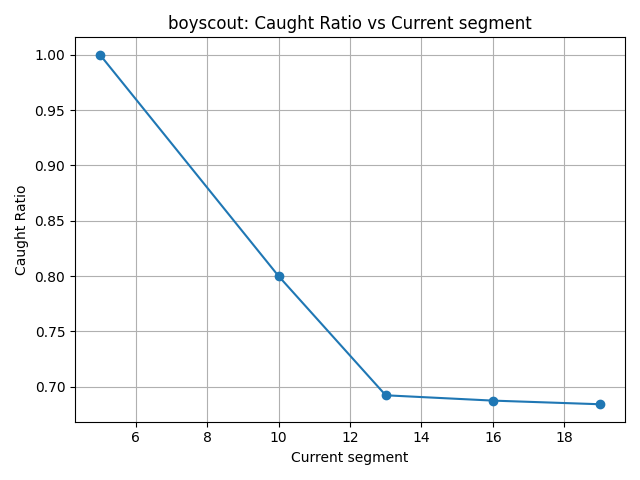
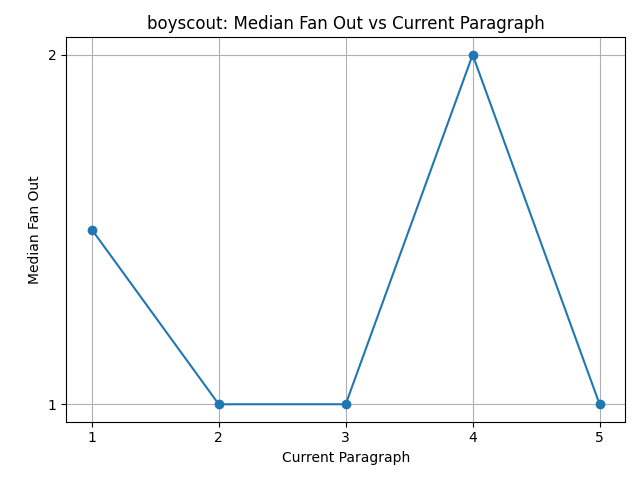

| Title | GPT-4 | Llama |
|---|---|---|
| Caught ratio vs number of segments |
gpt4_caught_ratio_vs_number_of_segments.html

|
llama4_caught_ratio_vs_number_of_segments.html  |
| Number of clauses vs current paragraph | gpt4_number_of_clauses_vs_current_paragraph.html | llam4_number_of_clauses_vs_current_paragraph.html |
| Median fan out vs current paragraph | gpt4_median_fan_out_vs_current_paragraph.html | llama4_median_fan_out_vs_current_paragraph.html  |